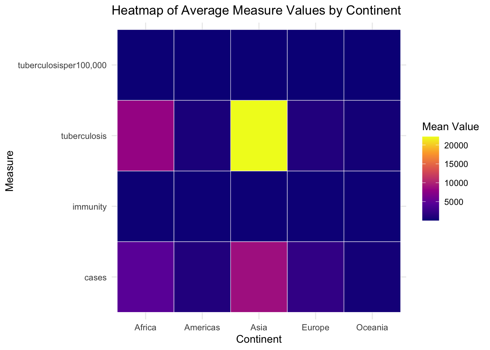
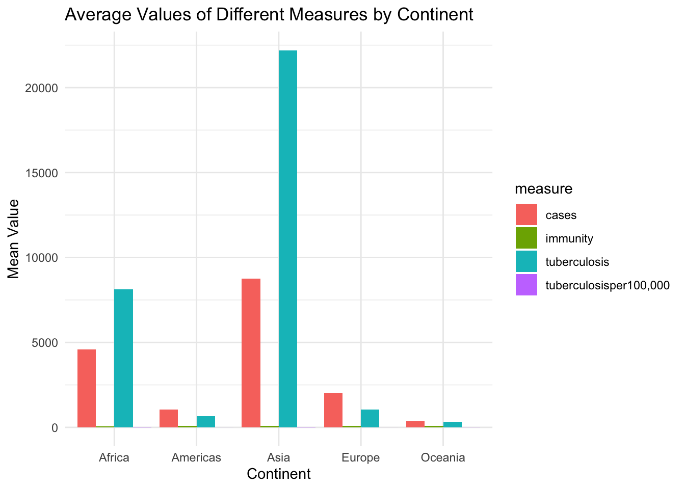
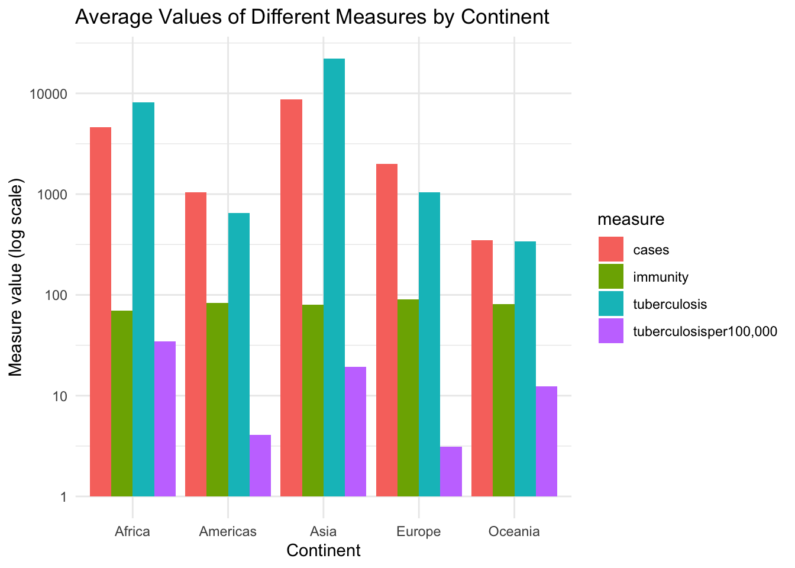
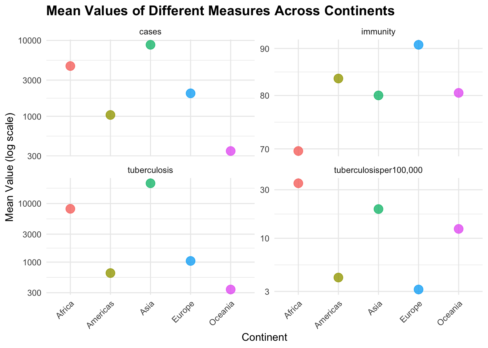
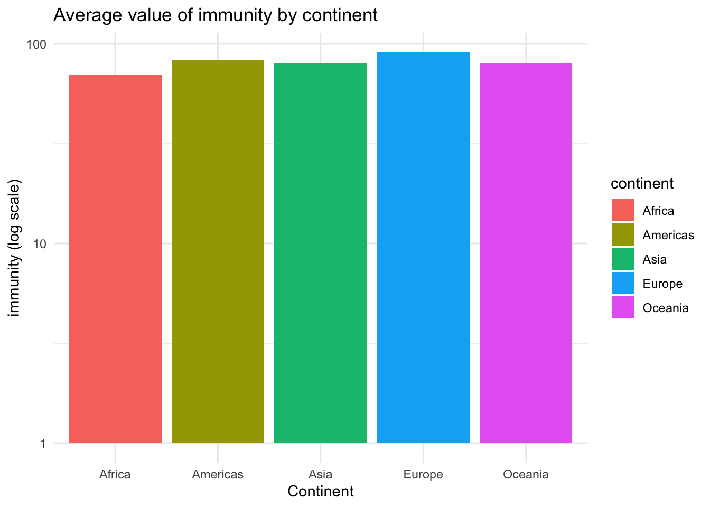

| Entity | Year | BCG.immunization.coverage.among.1.year.olds..WHO.2017. | Hepatitis.B..HepB3..immunization.coverage.among.1.year.olds..WHO.2017. | DTP3.immunization.coverage.among.1.year.olds..WHO.2017. | Polio..Pol3..immunization.coverage.among.1.year.olds..WHO.2017. | Measles..MCV..immunization.coverage.among.1.year.olds..WHO.2017. | Number.of.confirmed.tetanus.cases..WHO.2017. | Number.confirmed.polio.cases..WHO.2017. | Number.of.confirmed.pertussis.cases..WHO.2017. | Number.of.confirmed.measles.cases..WHO.2017. | Number.of.confirmed.diphtheria.cases..WHO.2017. | Estimated.deaths.due.to.tuberculosis.per.100.000.population..excluding.HIV..WHO.2017. | Estimated.number.of.deaths.due.to.tuberculosis..excluding.HIV..WHO.2017. | X | X.1 | X.2 | X.3 | X.4 | X.5 |
|---|---|---|---|---|---|---|---|---|---|---|---|---|---|---|---|---|---|---|---|
| Afghanistan | 1974 | NA | NA | NA | NA | NA | NA | NA | NA | 7 | NA | NA | NA | NA | NA | NA | NA | NA | NA |
| Afghanistan | 1975 | NA | NA | NA | NA | NA | NA | NA | 1 | 466 | 22 | NA | NA | NA | NA | NA | NA | NA | NA |
| Afghanistan | 1976 | NA | NA | NA | NA | NA | NA | NA | 199 | 26 | 35 | NA | NA | NA | NA | NA | NA | NA | NA |
| Afghanistan | 1977 | NA | NA | NA | NA | NA | 968 | NA | 11285 | 28174 | 480 | NA | NA | NA | NA | NA | NA | NA | NA |
| Afghanistan | 1978 | NA | NA | NA | NA | NA | 1374 | NA | 21200 | 43964 | 2154 | NA | NA | NA | NA | NA | NA | NA | NA |
SOCS0100_Assignment1
Part I-A Data Exploration and Contextualisation
The chosen dataset for this assignment was released by the WHO, which displays the immunisation coverage among 1 year olds between 1974 and 2015 for diseases such as Tuberculosis (the data doesn’t explicitly say tuberculosis immunisation coverage, because the disease is protected by the BCG vaccine), Hepatitis B, Diphtheria, Tetanus, Polio, and Measles in different regions of the world. It also includes data of the number of confirmed cases for Tetanus, Polio, Pertussis, Measles, and Diphtheria. Finally, the dataset showcases the estimated deaths due to tuberculosis excluding HIV.
We will begin by defining one of the key variables in the dataset - immunisation coverage. It is the outcome of successful vaccination which accounts for full immunity to the disease. This dataset was chosen for this assessment as it is highly relevant in today’s social science studies. It wishes to determine the relationship between immunisation coverage and the resulting number of confirmed cases. This could be a potential indicator of the minimum immunisation coverage that is needed to reduce cases.
After further inspection of the dataset, we notice that all diseases are part of the “Routine Immunisation Schedule”, which is a recommended vaccination schedule [1] by a country’s health department to be completed before the age of 1.
The dataset is thus useful when judging the overall quality of the country’s health care system, and whether it is consistent. Because some of these diseases require more than just one dose. Let us look at the DTP3 vaccine, the third dose for prevention of Diphtheria and Tetanus as an example. A low immunisation coverage and of Diphtheria and Tetanus may thus be a potential suggestion of a low consistency in the country’s healthcare system because people need to have 3 doses to have full immunity. There is thus high relevance of this dataset in social science, as it allows exploration of how social phenomenon influences the general state of a country’s healthcare [2] system.
Finally, in terms of missing values (NA), the dataset contains quite a significant missing values. There is no clear pattern in these but in general, many missing values are from countries with less developed healthcare systems, and are during the years before the 2000s. These descriptive findings are not unexpected as it is likely that these countries didn’t have the means to record data given their social and economic situations.
[2]https://www.kcl.ac.uk/kghi/research/health-and-social-science
[1]https://www.sciencedirect.com/topics/immunology-and-microbiology/vaccination-schedule#:~:text=A%20vaccination%20schedule%20is%20defined,is%20effectively%20built%20and%20sustained.
Part I-B Data Processing and Functional Programming
This section aims to carry out 3 data wrangling using libraries such as Tidyverse packages, like dyplr. The first operation is renaming the dataset columns after having carried out all the necessary steps before hand (Removing everything in my environment and setting up working directory, downloading required packages such as pacman, and importing the “vaccine_2017.csv” data.)
The table below shows the first 5 rows of the raw vaccine data.
As shown in Figure 1, the column labels are extremely long and complicated. The column names will thus be renamed into a cleaner format.
| Country | Year | BCG_immunity | HepB3_immunity | DTP3_immunity | Polio_immunity | Measles_immunity | Tetanus_cases | Polio_cases | Pertussis_cases | Measles_cases | Diphtheria_cases | Deaths_tuberculosisper100,000 | Deaths_tuberculosis | X | X.1 | X.2 | X.3 | X.4 | X.5 |
|---|---|---|---|---|---|---|---|---|---|---|---|---|---|---|---|---|---|---|---|
| Afghanistan | 1974 | NA | NA | NA | NA | NA | NA | NA | NA | 7 | NA | NA | NA | NA | NA | NA | NA | NA | NA |
| Afghanistan | 1975 | NA | NA | NA | NA | NA | NA | NA | 1 | 466 | 22 | NA | NA | NA | NA | NA | NA | NA | NA |
| Afghanistan | 1976 | NA | NA | NA | NA | NA | NA | NA | 199 | 26 | 35 | NA | NA | NA | NA | NA | NA | NA | NA |
| Afghanistan | 1977 | NA | NA | NA | NA | NA | 968 | NA | 11285 | 28174 | 480 | NA | NA | NA | NA | NA | NA | NA | NA |
| Afghanistan | 1978 | NA | NA | NA | NA | NA | 1374 | NA | 21200 | 43964 | 2154 | NA | NA | NA | NA | NA | NA | NA | NA |
The variable names are much cleaner now. However there are empty unnecessary columns at the far right. The second data wrangling operation will thus be selecting variables and deleting these columns. This table will be called our clean dataset.
# Tidying column names
library(dplyr)
library(stringr)
library(tidyr)
colnames(data_clean) <- colnames(data_clean) %>%
str_squish() %>% # Using str_squish() to make sure that there are no unnecessary spaces.
str_to_lower() # Using str_to_lower() to make all characters lowercase and thus make my text consistent.
colnames(data_clean) # Checking to see newly cleaned column names. [1] "country" "year"
[3] "bcg_immunity" "hepb3_immunity"
[5] "dtp3_immunity" "polio_immunity"
[7] "measles_immunity" "tetanus_cases"
[9] "polio_cases" "pertussis_cases"
[11] "measles_cases" "diphtheria_cases"
[13] "deaths_tuberculosisper100,000" "deaths_tuberculosis" knitr::kable(head(data_clean, 5))| country | year | bcg_immunity | hepb3_immunity | dtp3_immunity | polio_immunity | measles_immunity | tetanus_cases | polio_cases | pertussis_cases | measles_cases | diphtheria_cases | deaths_tuberculosisper100,000 | deaths_tuberculosis |
|---|---|---|---|---|---|---|---|---|---|---|---|---|---|
| Afghanistan | 1974 | NA | NA | NA | NA | NA | NA | NA | NA | 7 | NA | NA | NA |
| Afghanistan | 1975 | NA | NA | NA | NA | NA | NA | NA | 1 | 466 | 22 | NA | NA |
| Afghanistan | 1976 | NA | NA | NA | NA | NA | NA | NA | 199 | 26 | 35 | NA | NA |
| Afghanistan | 1977 | NA | NA | NA | NA | NA | 968 | NA | 11285 | 28174 | 480 | NA | NA |
| Afghanistan | 1978 | NA | NA | NA | NA | NA | 1374 | NA | 21200 | 43964 | 2154 | NA | NA |
Now that the columns are renamed and all unnecessary columns have been gotten rid of, we may carry out our 3rd and final data wrangling task: Reshaping our data frame (pivoting longer, creating new variables “disease” and “measure”, and removing all NA.)
I have decided that it was appropriate to remove all NAs, as no clear pattern was visible in them. If the NAs were scattered across the years, then there may have been specific reasons to them. However, since the missing values were large chunks of early on years, it was extremely likely that it was due to poor technology and awareness.
data_long <- data_clean %>%
pivot_longer(
cols = -c(country, year),
names_to = c("disease", "measure"),
names_sep = "_", # Separates disease from the measure (immunisation coverage, cases, deaths from tuberculosis, and deaths from tuberculosis per 100,000)
values_to = "value",
values_drop_na = TRUE
)
knitr::kable(head(data_long, 5))| country | year | disease | measure | value |
|---|---|---|---|---|
| Afghanistan | 1974 | measles | cases | 7 |
| Afghanistan | 1975 | pertussis | cases | 1 |
| Afghanistan | 1975 | measles | cases | 466 |
| Afghanistan | 1975 | diphtheria | cases | 22 |
| Afghanistan | 1976 | pertussis | cases | 199 |
Part II-A Data Visualisation and Functional Programming
In this section, 3 insightful data visualisations will be carried out using libraries like ggplot2, derived from my refined “data_long” dataset.
Before commencing with anything, the tidyverse package has to be installed.
The new dataset that had been pivoted long still contained too many variables to visualise it. Critical engagement of Copilot became useful here, as it suggested to create average values of each measure, as well as group the countries by continent, as the dataframe contained over 100 different countries. The previous dataset was thus refined into a new one shown below:
# Creating a new table with the average value
library(dplyr)
averages <- data_long %>%
group_by(country, measure) %>% # group by country AND variable type
summarise(mean_value = mean(value, na.rm = TRUE)) %>%
ungroup()
# Grouping countries by continent
library(dplyr)
library(countrycode)
continent <- averages %>%
filter(!country %in% c("World", "Africa", "Americas", "Eastern Mediterranean",
"Europe", "Micronesia (country)", "South-East Asia", "Western Pacific")) %>%
mutate(continent = countrycode(country, "country.name", "continent",
custom_match = c("Timor" = "Asia"))) # The countrycode() function could not match "Timor" to "Asia", so I had to manually code this, as a potential risk might have been that the code would return "Timor" as an NA.
continent <- averages %>%
filter(!country %in% c("World", "Africa", "Americas", "Eastern Mediterranean",
"Europe", "Micronesia (country)", "South-East Asia", "Western Pacific")) %>%
mutate(continent = countrycode(country, "country.name", "continent", # The countrycode() function matches the country to the continent.
custom_match = c("Timor" = "Asia")))
continent_means <- continent %>%
group_by(continent, measure) %>%
summarise(mean_value = mean(mean_value, na.rm = TRUE))
knitr::kable(head(continent_means, 5))| continent | measure | mean_value |
|---|---|---|
| Africa | cases | 4598.47739 |
| Africa | immunity | 69.62625 |
| Africa | tuberculosis | 8128.11574 |
| Africa | tuberculosisper100,000 | 34.77778 |
| Americas | cases | 1040.98642 |
It is now much easier to use this dataset for our first data visualisation, which is a heatmap. Once again, critical engagement of AI made me derive to the conclusion that the first data visualisation method should be easy to understand and provide a general overview fo the trend in the data. A heatmap is a simple way to analyse where values are high or low using colour.

The heatmap as shown in Figure 5 is a simple way that informs us on relative trends at one glance. For instance, it is strikingly clear that tuberculosis deaths in Asia are extremely high compared to other continent. However, a weakness of this data visualisation is that it doesn’t give us precise values.
Now that we know the general trends of the dataframe, it may be useful to plot a bar chart, which would give us more precise values for each continent.

Unfortunately, the values for immunity and deaths from Tuberculosis per 100,000 aren’t visible because they are significantly smaller than the other two measures. Using critical engagement of Copilot, which suggested to apply a logscale to compress large values, and make smaller ones more spread out.

# Applying a logscale because immunity and tuberculosisper100,000 aren't visible (values are too small)
ggplot(continent_means, aes(x = continent,
y = mean_value,
fill = measure)) +
geom_col(position = "dodge") +
scale_y_log10() + # This function allows us to apply a logscale to values.
labs(
title = "Average Values of Different Measures by Continent",
x = "Continent",
y = "Measure value (log scale)"
) +
theme_minimal()
As illustrated in Figure 7, it is much easier to view and compare the bars with a logscale applied. We may observe for example, that immunity levels are very similar in all continent, or that cases are highest in Asia.
Although the bar chart gives us insightful information on the exact values, the visual clutter of 4 different types of measures for each continent may not be the best way to present the data. This is why I decided to plot a dot plot for my final data visualisation, which is a much cleaner. Furthermore, using AI I had come to the conclusion that it would be optimal to create 4 separate graphs (one for each measure) to avoid the visual cluster, which was the problem when I had plotted the bar chart.

One last step we can take to make this whole process easier is automating the plotting of the bar chart:
# Displaying the first plot
bar_plots[[1]]
# Displaying the second plot
bar_plots[[2]]
# Displaying the third plot
bar_plots[[3]]
# Displaying the fourth plot
bar_plots[[4]]
Automation allows me to plot the graphs without having to write the codes each time.
Using these graphs, we may come down to several conclusions. Although cases more or less similar in all continents (shown in , the average value of deaths